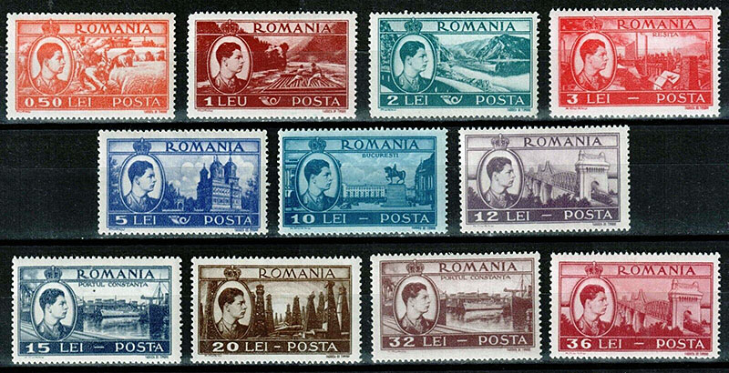
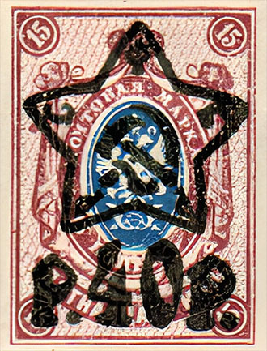
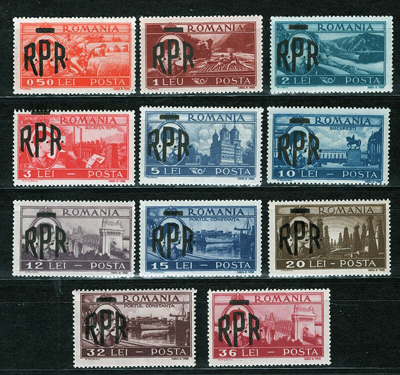

How to make some beautiful views uglier
Victor Manta, PWO
The set of thirteen stamps "Views" of the Romanian Post, issued in 1947, is undoubtedly one of the most beautiful issues of that era.
Its designers chose to present the most representative images that illustrate aspects of the meaningful activities of the agricultural and industrial development of a country that, shortly before, went through a Second World War, devastating for Romania, following which it was occupied for almost half a century by its immense and aggressive neighbor, the Soviet Union.
The eloquent images of the cultural and historical heritage, as well as aspects of the natural beauties of a country that has one of the most favorable geographical positions in Europe, were not forgotten either.

Here, in brief, is what the stamps of the issue present (Scott 666 - 676, Michel 1066 - 1076)
- 0.50 Lei. Wheat Harvesting.
A rather propaganda image for an agriculture, albeit traditional, but backward. We are shown how some women were manually reaping a small wheat field, typical for that period. The data show that, at the end of the interwar period, Romanian peasants worked hard and for no use, having the lowest productivity among European countries that meant something in agriculture.
- 1 Leu. River log raft.
During the interwar period, rafting reached its peak: historians show that 25,000 families supported themselves from this profession - whether it was those who cut wood, those who transported it to the banks of the Bistriţa River, those who loaded and unloaded cargo, or raftsmen on one of the fastest and most dangerous waterways in the country.
- 2 Lei. Cazanele Dunarii.
The Cazanele are a sector of the Danube Gorge as it passes through the Carpathian Mountains. They are about 9 km long. In some places the Danube narrows to 230 m, making navigation difficult. The river is bordered by vertical, rocky walls. Maximum depths of about 75 m. In the Cazanele sector, the water flow speed exceeds 5 m/s.
- 3 Lei. Reșița (read: Reshitsa) Factory.
The Resita industrial complex was established on July 3, 1771 by commissioning the first furnaces and forges, being known as the oldest industrial facility in Romania and one of the oldest in the whole Europe. The company was the biggest in Romanian economy as concerns the turnover, the registered capital and the number of employees. The total number of employees in 1948 was 22,892.
- 5 Lei. Cathedral of Curtea de Argeș.
Curtea de Argeș Monastery is an Orthodox monastery in Romania, located in the city of Curtea de Argeș, built between 1515 and 1517 by Voivode Neagoe Basarab. The ensemble includes the episcopal cathedral, one of the most famous architectural monuments in Wallachia. During the reign of King Carol I, the cathedral was transformed into a necropolis for the royal family of Romania.
- 10 Lei. The Royal Palace and the Equestrian Monument of King Carol I in Bucharest. The Royal Palace and the Equestrian Monument of King Carol I.
The Royal Palace was completed in 1937, under the patronage of King Carol II. The general plans of the building and the decoration were made through the direct efforts of Queen Maria of Romania, who closely supervised the team of architects and builders. The equestrian statue of King Carol I of Romania, made by Ivan Meštrović, was inaugurated on 10 May 1939, on Romania's National Day, in the presence of King Carol II of Romania and Grand Duke Michael (the future King Michael of Romania), which also marked the 100th anniversary of the birth of Carol I.
- 12 Lei and 36 Lei. Cernavoda Bridge.
The Anghel Saligny Bridge, formerly King Carol I Bridge, is a complex of two railroad truss bridges, across the Danube River and the Borcea branch of the Danube, connecting the regions of Muntenia and Dobruja. The bridge complex was built between 1890 and 1895 over the Danube, the Borcea branch of the Danube, and Balta Ialomiței island. When it was completed with a total length (including viaducts) of 4,087.95 m (13,411.9 ft) it became the longest bridge in Europe and the second longest in the world.
- 15 Lei and 32 Lei. Port of Constanța (read: Constantsa).
The construction of the port began on October 16, 1896, when King Carol I set the first stepping stone for the construction and modernization of the port. The port was finished and first opened in 1909 and had adequate facilities for that time. In 1937, the amount of cargo handled was 6,200,000 tonnes.
- 20 Lei. Petroleum field.
Romania is also one of the most prolific hydrocarbon regions in the world, with over 170 years of Oil and Gas history and some landmark industry discoveries. There is general consensus that Romania ranked third among European oil producers in the mid-1850s through the year 1900, and in the mid-30s it was fourth among world producers. During both World War I and World War II access to the Romanian oil fields was of vital strategic importance to fuel the growing mechanization of all armies.

Russia (RSFSR) 1922. Overprint on the old coats of arms.
Set issued in 1948, "Views", with effigy of King Michael I and the crown overprinted R.P.R. and a thick line, Scott 684 - 694, Michel 1106 - 1116
The coup d'état of December 30, 1947 (called in communist historiography the Proclamation of the Romanian People's Republic or Republic Day) represents the illegal, forceful action that took place between December 30, 1947 and January 3, 1948, by which the Romanian communists, supported by the Soviet military occupiers, imposed on King Michael by threat the signing of an act of abdication, proclaiming the Romanian People's Republic (in violation of the constitution in force at that time).

Shortly afterwards, in March 1948, the beautiful set shown above was brutally overprinted, covering up the now hostile image of the former King of Romania and the royal crown. The face values of the stamps remained unchanged, which shows once again that the intended purpose was purely political, to show who had become the master of the country.
As an example, the Soviet occupier took the Russian stamp, overprinted in 1922. It covered also in solid black, with the abreviation RSFSR (Russian Soviet Federativ Socialist Republic) inserted into the corners of the star, the coat of arms of the former Russian empire. From this historical perspective, the "Views" set was luckier, because at least the views themselves remained intact.